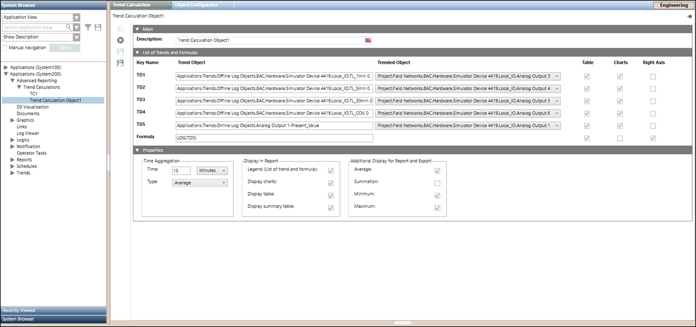

Trend Calculation Workspace
This section gives an overview of the Trend Calculation workspace.

The Main expander, lets you configure the following element:
- Description: Allows you to enter the name for a trend calculation object.
The List of Trends and Formulas expander, lets you configure the following elements:
- Key Name: Allows you to identify each individual Trend Object, with a fixed name (for example, TD1, TD2, TD3, TD4, and TD5).
- Trend Object: Allows you to drag-drop either an offline trend log object, an offline trend log multiple object or an online trend log object.
- Trended Object: Displays a trended object which corresponds to each individual Trend Object.
NOTE: In case of offline trend log multiple object, you can select a corresponding trended object from the drop-down list. - Table: Allows visibility of the corresponding Trend Object and Formula in the Table section of the report.
NOTE: By default, the checkbox that displays below Table is checked which corresponds to each individual Trend Object and the Formula. - Charts: Allows visibility of the corresponding Trend Object and Formula in the Graph(s) section of the report.
NOTE: By default, the checkbox that displays below Charts is checked which corresponds to each individual Trend Object. - Right Axis: Allows visibility of the corresponding Trend Object and Formula, which is plotted on the right axis.
NOTE: By default, the checkbox that displays below Right Axis is checked for the corresponding Formula. - Formula: Allows to specify a custom formula. The following table represents the mathematical functions that are supported in the Formula field, where x represents a trend definition that is, TD1, TD2, TD3, TD4 or TD5. Enter the mathematical functions in uppercase as they are case-sensitive, e.g. SIN, COS, TAN etc.
NOTE: If the mathematical function are specified in small letters e.g. cos, sin, tan etc. then the trend calculations are incorrect.
Function | Description |
SQRT(x) | Returns square root of x. |
EXP(x) | Returns E’x. E is Euler's number (approximately 2.7183). |
COS(x) | Returns the cosine (a value between -1 and 1) of the angle x. x is in radians. |
SIN(x) | Returns the sine (a value between -1 and 1) of the angle x. x is in radians. |
TAN(x) | Returns the tangent of x. x is in radians. |
LOG(x) | Returns the natural logarithm of x. |
POW(x)(y) | Returns the value of x to the power of y. |
The following table represents comparison and logical operators that are supported in the Formula field, where x and y represents a trend definition i.e. TD1, TD2, TD3, TD4 or TD5.
Operators | Description |
x<y | Shows 1 in the Formula field if x is less than y and 0 if x is greater than y. |
x>y | Shows 1 in the Formula field if x is greater than y and 0 if x is less than y. |
(x<9) && (y>10) | Shows 1 in the Formula field if both given conditions are true. For example, x is less than 9 and y is greater than 10. |
(x<9) || (y>10) | Shows 1 in the Formula field if one of the given conditions is true. For example, x is less than 9 or y is greater than 10. |
(x+y) != 10 | Shows 1 in the Formula field if the value is not equal to the required value. For example, the addition of x and y is not equal to 10. |
(x+y) == 25 | Shows 1 in the Formula field if the value is equal to the required value. For example, the addition of x and y is equal to 25. |
The Properties expander, lets you configure the following elements:
- Time Aggregation: Allows you to specify the time interval and select the aggregation type, for which the trend data should display with a timestamp in the report.
- Display in Report: Allows visibility of List of trends, Graph(s), Table, and Summary Table in the report.
NOTE: By default, the checkbox that displays next to Legend (List of trend and formula), Display charts, Display table, and Display summary table is checked. - Additional Display for Report and Export: Allows visibility of Average, Summation, Minimum, and Maximum in the Table section of the report.
NOTE: By default, the checkbox that displays next to Average, Minimum, and Maximum is checked.
The toolbar provides you with the following icons:
- New trend calculation folder: Allows you to create a new trend calculation folder, below the Trend Calculations node in System Browser.
- Delete: Deletes a trend calculation folder below the Trend Calculations node in System Browser.
- Save: Saves the information of a modified trend calculation object.
- Save as: Saves the information of a new trend calculation object.